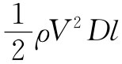
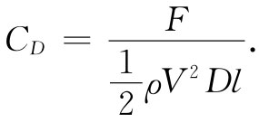

图41-4 一根圆柱体的曳引系数CD 作为雷诺数的函数
让我们回到低速（几乎是不可压缩的）流经柱体的流动问题上来，将对实际流体的流动给予定性描述。有许多关于这类流动的情况我们很想知道——例如作用于柱体上的曳引力是什么？作用于柱体上的曳引力作为R的函数被画成图41-4中的曲线。若其他一切都保持固定的话，则R与空气的速度V成正比。实际上所画出来的乃是所谓曳引系数 CD ，它是一个无量纲的数值，等于力除以 ，其中D和l分别代表柱体的直径和长度，而ρ则是流体的密度：

这曳引系数按相当复杂的方式变化，并为我们提供一种预示，即在流动中正发生着某些相当有趣而又复杂的事情。我们现在将对不同的雷诺数范围的流动性质进行描述。首先，当雷诺数十分小时，流动完全是定常的，这就是说，在任何地方速度都恒定，流动绕柱体而过。可是，流线的实际分布却不像在有势流动中那样，它们是稍微不同的方程之解。当速度十分低，或等效地说，当黏性十分高以致该物质像蜂蜜那样时，则那些惯性项都可以忽略，而流动便可由下式描写：
▽2 Ω=0.
这个方程首先由斯托克斯求解。他也曾解过关于球体的同样问题。若你有一个小球在这种低雷诺数的条件下运动，则曳引它所需之力等于6πηaV，其中a为球体半径而V为其速度。这是一个十分有用的公式，因为它决定尘埃微粒（或可近似地视作球体的其他粒子）在一给定力的作用下穿过一流体——诸如在一离心机中，或在淀积或扩散过程中——的运动速率。在低雷诺数区域——对于R小于1的情围绕一根柱体 的v线如图41-5所示。
图41-5 围绕一根圆柱体的黏性流动（低速流动）
如果现在为了获得比1大一些的雷诺数而增大流体速率，则我们发现流动情况不同了。在该柱体后面存在环流，如图41-6（b）所示。关于是否即使在雷诺数最小时也总会有环流存在，或要在某一定雷诺数时情况才突然发生变化，这仍然是个未解决的问题。人们过去常常认为环流是连续不断地生长的，但现在却认为环流是突然出现的，并肯定它随R而增加。无论如何，对于R在10～30范围内的流动来说存在不同的特性。在该柱体后面就有一对涡旋。
图41-6 流经一柱体的、不同雷诺数的流动
当R达到40左右的数目时，流动已经再次发生变化。在运动的特性方面突然有一个完全的改变。所发生的情况是，在该柱体后面有一个涡旋竟变得那么长，以致分裂开来并随液体顺流而行。这时在柱体后面附近的流体又会卷起来并形成新的涡旋。这些涡旋在每一边交替散裂，因而流动的瞬时图看来大致像示意图41-6（c）所画的那样，这些涡旋的流称为“卡门涡街”，它们总是在R＞40时出现，这种流动的照片如图41-7所示。
图41-7 由潘德耳（L. Prandtl）拍摄的在柱体后面的流动中出现的“涡街”照片
在图41-6中，（a）与（b）或与（c）这两种流动间的差别在状态方面几乎已完全不同。在图（a）或（b）中，速度是恒定的，而在（c）中，则在任一点的速度都随时间变化。超过R=40时就不会有定常解了。对于这些较高的雷诺数，流动会随时间变化，但还是以有规则 的周期性方式进行的。
关于这些涡旋如何产生，我们可得到一个物理概念。我们知道，流体速度在柱体表面处必须为零，也知道在离开表面后速度便迅速增长。涡性就是由流体速度方面的这种巨大的局域变化产生的。现在，当主流的速度足够低时，对涡性来说便会有充分时间从靠近柱面产生它的那个薄薄的区域扩散开来并生长成一个大涡旋区。这一物理图像应该会帮助我们对主流速度或R再度增大时在流动性质方面的下一次变化做好思想准备。
当速度变得越来越高时，涡性扩散至较大的流体区域中的时间就越来越少了。当雷诺数达到几百时，涡性已开始充满一条薄薄的带，如图41-6（d）所示。在这一薄层中，流动是混沌和无规的，这一个区域叫做边界层 。而当R增大时这个无规流动区会克服困难越来越往上游伸展。在这一湍流区中，速度非常无规，而又“受到干扰”，流动也不再是二维的，而是在整个三维中都出现扭转和转动。但仍然有一规则的交替运动叠加于这种湍流之上。
当雷诺数进一步增大——对稍高于R=105 的那种流动——这湍流区会克服困难向前直到它抵达流线刚离开柱体的地点。这种流动如图41-6（e）所示，因而我们就有了所谓“湍流边界层”。并且，在曳引力方面存在猛烈变化，它下降了很多倍，如图41-4中所示。在这一个速率范围中，曳引力的确会随速度的增加而降低 ，周期性的迹象似乎很少。
对于更大的雷诺数将会发生什么呢？当我们进一步提高速率时，那尾流的尺寸会再度增大，而曳引力又复增加。最近的实验——达到R=107 左右——指出：有一种新的周期性出现在尾流之中，这或者是由于整个尾流以整体运动的方式发生了来回振动，或者是由于某种新类型的涡旋正伴随那不规则的嘈杂运动而产生。详细的情况迄今还不完全清楚，人们仍在用实验方法进行研究。